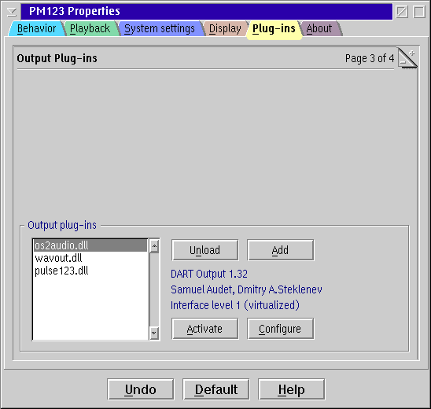

PM123's Output Plug-ins Configuration

Output plug-in list
Select an output plug-in from the list to view
additional information and manipulate the plug-in.
Buttons
- Unload
- Unloads the currently selected plug-in completely.
- Add
- Add a plug-in DLL.
- Activate
- Activates the selected plug-in. This implicitly deactivates any
other output plug-in since only one output can be active at a time.
- Configure
- Available only if the plug-in is configurable. Click this button
to set plug-in's settings.
Double-click a plug-in from the list box aside has the same effect.